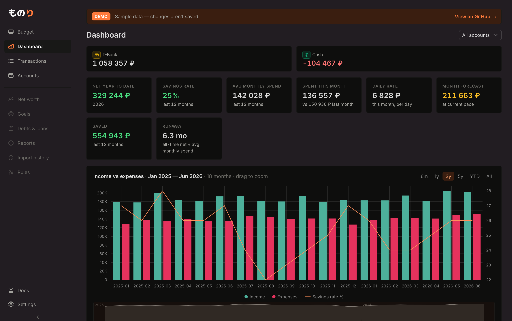
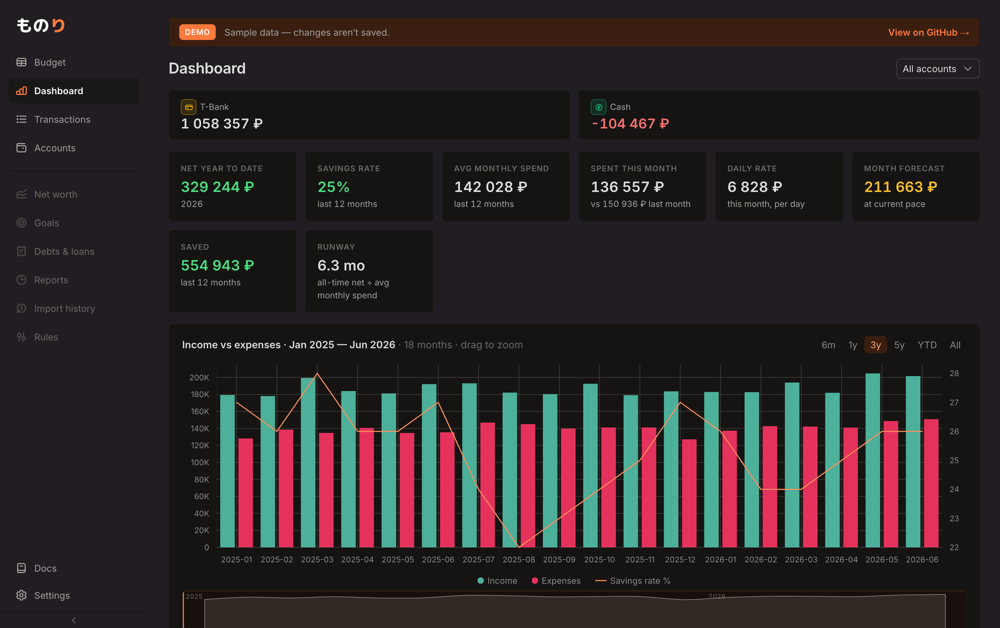
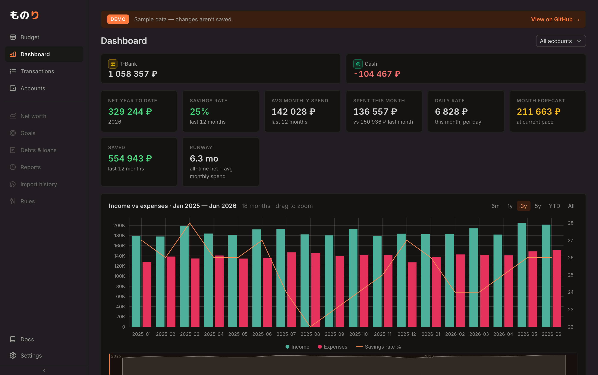
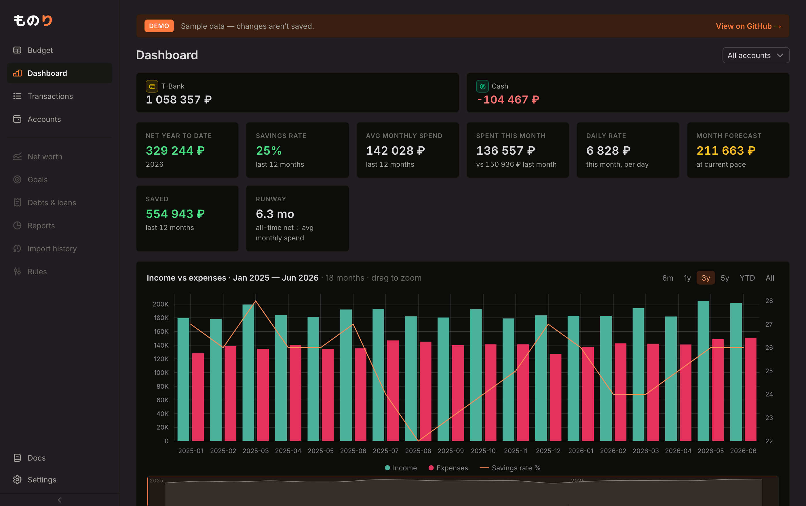

Каждый скриншот — настоящий дашборд /demo с реальными цветами, шрифтами и
графиком; отличается только заливка карточки, её бордер и (для E) фон-холст. Снято
скриптом dark-cards/gen.py. Обрати внимание: «0 · текущий» — это
то, что уже лежит в main; если в твоём приложении карточки выглядят более контрастными
(«чёрные блоки»), значит запущенный фронт старее main — пересобери его. Выбери букву —
применю в theme.css.



